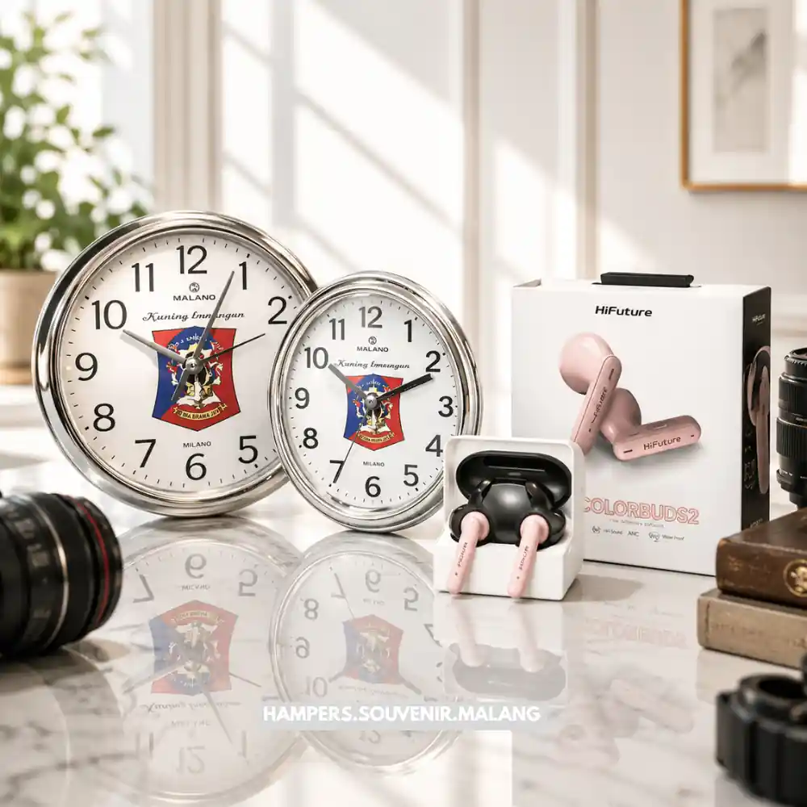

Daftar Isi
Corporate gift set adalah paket hadiah bertema bisnis berisi kombinasi barang bermanfaat.
Barang bermerek ini umumnya diberikan perusahaan kepada klien, mitra, maupun kepada para karyawan.
Paket ini digunakan untuk memperkuat hubungan bisnis, membangun citra brand, serta menciptakan kesan profesional.
- Corporate gift set adalah kumpulan barang yang dikemas rapi dengan tujuan mempererat relasi bisnis.
- Umumnya berisi kombinasi alat tulis, minuman, aksesori, atau produk bertema lokal.
- Dipakai untuk momen tertentu seperti akhir tahun, ulang tahun perusahaan, atau penyambutan klien baru.
- Pemilihan isi dan kemasan sangat memengaruhi persepsi penerima terhadap brand.
- Budget dan tujuan pemberian menentukan jenis gift set yang paling sesuai.
Apa Itu Corporate Gift Set?
Corporate gift set adalah paket hadiah yang disusun secara khusus oleh pihak perusahaan.
Paket ini diberikan kepada pihak eksternal maupun internal sebagai bentuk apresiasi dan promosi.
Langkah ini juga menjadi salah satu cara paling efektif untuk penguatan hubungan bisnis jangka panjang.
Berbeda dengan hadiah personal biasa, corporate gift set dirancang dengan identitas brand yang konsisten.
Mulai dari penempatan logo, penentuan warna korporat, hingga gaya bahasa pada kemasan luar.
Bahkan, pesan yang disematkan pada kartu ucapan juga disesuaikan untuk mencerminkan nilai-nilai perusahaan.
Secara umum, gift set jenis ini digunakan oleh bisnis dari berbagai skala, mulai dari startup hingga korporasi besar.
Strategi ini sering dikaitkan dengan momen tertentu seperti perayaan hari raya atau penutupan tahun fiskal.
Peluncuran produk baru dan penyambutan mitra kerja sama juga kerap menjadi alasan utama pemberian suvenir ini.
Perusahaan yang konsisten memberikan hadiah bermerek cenderung memiliki tingkat brand recall yang jauh lebih baik.
Penerima akan lebih mudah mengingat perusahaan Anda dibandingkan mereka yang tidak pernah memberikan hadiah.
Meskipun demikian, besaran dampaknya dapat bervariasi tergantung pada kualitas dan relevansi isi hadiah tersebut.
Mengapa Corporate Gift Set Penting untuk Bisnis?
Corporate gift set sangat penting karena dapat membantu memperkuat loyalitas klien terhadap bisnis Anda.
Selain itu, suvenir eksklusif ini juga terbukti ampuh dalam meningkatkan citra profesional sebuah perusahaan.
Hadiah ini akan otomatis menjadi media promosi yang halus namun memberikan efek jangka panjang yang berkelanjutan.
Melihat tingginya manfaat tersebut, banyak perusahaan kini mengalokasikan anggaran khusus untuk hal ini.
Mereka menyadari bahwa ini adalah sebuah investasi marketing yang sangat sepadan dengan hasil akhirnya.
Beberapa alasan utama mengapa pengadaan corporate gift set ini menjadi sangat esensial antara lain:
- Membangun hubungan jangka panjang. Hadiah yang tepat dapat menunjukkan apresiasi nyata kepada klien atau mitra, sehingga memperkuat kepercayaan dalam kerja sama bisnis.
- Meningkatkan visibilitas brand. Barang bermerek yang digunakan sehari-hari oleh penerima berfungsi sebagai media promosi pasif yang berkelanjutan.
- Menciptakan kesan profesional. Kemasan dan isi yang rapi mencerminkan standar kualitas perusahaan di mata penerima.
- Mendukung employee engagement. Ketika diberikan kepada karyawan, gift set dapat meningkatkan rasa dihargai dan motivasi kerja.
Kapan Waktu yang Tepat Memberikan Corporate Gift Set?
Corporate gift set paling umum diberikan kepada klien maupun mitra bisnis pada momen akhir tahun.
Selain itu, hari raya dan ulang tahun perusahaan juga kerap dijadikan sebagai waktu pemberian suvenir.
Penyambutan klien baru atau perayaan pencapaian target bisnis tertentu juga menjadi momen yang sangat direkomendasikan.
Penentuan waktu pemberian suvenir yang tepat tidak boleh dilakukan secara sembarangan oleh perusahaan.
Di bawah ini merupakan rangkuman beberapa momen yang paling umum menjadi alasan pemberian gift set korporat.
Pastikan Anda memanfaatkan momen-momen ini agar hadiah yang diberikan menjadi jauh lebih berkesan:
- Perayaan akhir tahun atau pergantian tahun fiskal
- Hari raya keagamaan seperti Lebaran atau Natal
- Ulang tahun perusahaan atau pencapaian milestone tertentu
- Penyambutan klien, mitra, atau karyawan baru
- Apresiasi atas kerja sama proyek yang berhasil diselesaikan
Waktu pemberian yang tepat akan secara otomatis meningkatkan relevansi dan kesan positif dari hadiah tersebut.
Penerima akan merasa lebih dihargai apabila hadiah tersebut datang bertepatan dengan momen perayaan mereka.
Oleh karena itu, sangat penting bagi perusahaan untuk selalu menyesuaikan tema isi dengan momen yang melatarbelakanginya.
Apa Saja Isi Umum dalam Corporate Gift Set?
Isi corporate gift set umumnya terdiri dari kombinasi berbagai jenis perlengkapan dan alat tulis premium.
Aksesori kerja yang fungsional dan produk minuman eksklusif juga kerap dijadikan sebagai isi utama suvenir.
Beberapa perusahaan juga menambahkan barang bertema lokal yang disesuaikan kembali dengan anggaran dan segmen penerimanya.
Memilih kombinasi barang yang tepat akan memastikan suvenir perusahaan Anda diterima dengan penuh antusiasme.
Barang-barang yang dipilih hendaknya tidak hanya memiliki nilai estetika tinggi, tetapi juga fungsionalitas yang mumpuni.
Beberapa kategori isi produk suvenir yang saat ini paling sering ditemukan di pasaran antara lain adalah:
- Alat tulis premium seperti pulpen, notebook, atau organizer
- Aksesori kerja seperti mug, tumbler, atau power bank
- Produk konsumsi seperti kopi, teh, atau camilan kemasan
- Barang bertema lokal seperti kerajinan tangan atau produk UMKM
- Kartu ucapan personal dengan sentuhan branding perusahaan
Kombinasi isi tersebut biasanya harus disesuaikan terlebih dahulu dengan siapa yang menjadi target penerimanya.
Apakah hadiah ini diperuntukkan bagi klien korporat kelas atas, mitra bisnis biasa, atau sekadar karyawan internal.
Hal ini dikarenakan preferensi gaya dan ekspektasi dari masing-masing kelompok penerima tentu saja dapat sangat berbeda.
Bagaimana Cara Memilih Corporate Gift Set yang Tepat?
Memilih corporate gift set yang tepat selalu memerlukan pertimbangan yang saksama terhadap budget dan target penerimanya.
Anda juga harus menyelaraskannya dengan tema acara, jaminan kualitas barang, dan konsistensi branding bisnis Anda.
Oleh sebab itu, berikut adalah faktor-faktor penting yang perlu diperhatikan saat memilih suvenir perusahaan:
Sesuaikan dengan Budget yang Tersedia
Tentukan kisaran anggaran untuk per unit gift set sejak awal perencanaan agar proses seleksi vendor lebih terarah.
Ketersediaan budget yang jelas juga terbukti sangat membantu perusahaan dalam mencegah terjadinya pembengkakan biaya.
Langkah preventif ini menjadi semakin krusial terutama apabila gift set tersebut akan dibagikan dalam jumlah yang masif.
Kenali Profil Penerima
Pertimbangkan baik-baik mengenai rentang usia, jenjang jabatan, serta preferensi umum dari target penerima suvenir Anda.
Gift set yang ditujukan untuk klien korporat biasanya didesain agar terlihat jauh lebih formal, elegan, dan mewah.
Sementara itu, hadiah yang ditujukan untuk karyawan dapat dirancang agar tampil lebih kasual, santai, dan sangat personal.
Perhatikan Kualitas dan Daya Tahan Barang
Memilih barang yang berkualitas rendah dapat langsung menurunkan citra baik perusahaan meskipun desain kemasannya terlihat menarik.
Oleh karena itu, pastikan barang yang Anda pilih selalu memiliki fungsi nyata serta daya tahan pemakaian yang wajar.
Penerima hadiah dijamin akan lebih menghargai pemberian yang bisa mereka gunakan untuk mempermudah rutinitas sehari-hari.
Pastikan Konsistensi Branding
Penempatan logo, warna korporat, dan pesan pada kartu ucapan sebaiknya selalu selaras dengan identitas visual perusahaan.
Hal ini memiliki tujuan utama agar kesan profesional yang ditampilkan menjadi lebih kuat serta mudah diingat oleh penerimanya.
Branding yang sangat konsisten dipastikan akan membuat gift set Anda tampil lebih eksklusif dan merepresentasikan perusahaan.

Pilihan Paket Souvenir Kantor untuk Berbagai Kebutuhan
Apa Kesalahan Umum dalam Memilih Corporate Gift Set?
Kesalahan paling umum yang sering terjadi meliputi pemilihan barang tanpa mempertimbangkan profil atau kebutuhan penerimanya.
Banyak perusahaan juga kerap mengabaikan kualitas kemasan demi menekan biaya dan tidak menyesuaikan isi dengan momen pemberian.
Berbagai kelalaian kecil semacam ini bisa saja berdampak negatif terhadap pandangan penerima kepada citra brand Anda.
Untuk mencegah terjadinya hal yang tidak diinginkan, Anda harus mengenali apa saja jebakan saat memilih barang promosi.
Berdasarkan pengalaman para praktisi suvenir, berikut ini adalah rangkuman mengenai beberapa kesalahan yang sering terjadi.
Pastikan perusahaan Anda tidak melakukan satu pun dari daftar kesalahan fatal di bawah ini saat memesan produk:
- Memilih barang generik yang tidak relevan dengan kebutuhan penerima
- Mengabaikan kualitas kemasan sehingga kesan pertama kurang maksimal
- Tidak menyertakan pesan personal atau kartu ucapan
- Memaksakan budget rendah dengan mengorbankan kualitas barang utama
- Tidak melakukan pengecekan sampel sebelum produksi massal
Menghindari berbagai kesalahan tersebut dapat sangat membantu perusahaan dalam memastikan kelayakan gift set yang dibagikan.
Sebuah suvenir yang dipersiapkan dengan baik dipastikan benar-benar memberikan dampak positif yang maksimal.
Pada akhirnya, strategi ini akan mendatangkan keuntungan yang jauh lebih besar bagi kelangsungan hubungan bisnis Anda.
Berapa Kisaran Biaya Corporate Gift Set?
Biaya pembuatan corporate gift set dapat sangat bervariasi bergantung pada jumlah pesanan serta jenis barang yang dipilih.
Tingkat kesulitan desain dan proses kustomisasi produk juga turut menyumbang persentase harga yang cukup signifikan.
Secara keseluruhan, harganya bisa bervariasi mulai dari kategori paket ekonomis hingga paket premium berskala eksklusif.
Tidak ada patokan harga mutlak untuk satu set kado perusahaan karena penentuannya melibatkan banyak variabel berbeda.
Secara umum, besaran biaya produksi yang akan dibebankan kepada pelanggan dipengaruhi oleh beberapa faktor utama.
Berikut adalah daftar faktor yang menentukan harga jual sebuah paket hadiah korporat di pasaran saat ini:
- Jumlah item dalam satu paket
- Tingkat kustomisasi seperti cetak logo atau kemasan khusus
- Bahan dan kualitas barang yang dipilih
- Jasa pengemasan dan pengiriman ke berbagai lokasi
Perusahaan sangat disarankan untuk berinisiatif meminta penawaran harga dari beberapa kandidat vendor tepercaya sekaligus.
Hal ini bertujuan untuk membandingkan kualitas bahan dan harga sebelum memutuskan pilihan vendor produksi yang paling akhir.
Pasalnya, rentang harga di pasaran dapat bervariasi cukup signifikan tergantung pada kebijakan wilayah dan skala pemesanan.

Konsultasikan Kebutuhan Gift Set Anda dengan Ahlinya
Kesimpulan
Corporate gift set merupakan investasi strategis yang sangat efektif untuk diandalkan demi memperkuat hubungan bisnis Anda.
Media promosi ini juga dapat menaikkan citra brand di mata publik apabila suvenir tersebut memang dipilih dengan tepat.
Kunci utamanya selalu terletak pada kesesuaian isi barang dengan profil penerima serta penerapan konsistensi desain branding.
Sebelum memutuskan untuk membeli, sebaiknya perusahaan terlebih dahulu menentukan tujuan pemberian secara jelas dan spesifik.
Setelah itu, jangan lupa untuk menetapkan alokasi budget produksi yang masuk akal serta realistis bagi keuangan perusahaan.
Terakhir, pastikan Anda hanya memilih vendor tepercaya yang mampu menjaga standar kualitas serta ketepatan waktu produksinya.
Butuh Bantuan Merancang Corporate Gift Set?
Tim ahli kami siap membantu Anda menyusun paket hadiah eksklusif yang menarik.
Pilihan barang akan disesuaikan dengan ketersediaan budget dan kebutuhan Anda.
Seluruh desain kemasan akan kami selaraskan dengan identitas visual perusahaan Anda.
Dapatkan penawaran harga terbaik untuk pesanan massal!
FAQ Seputar Corporate Gift Set
Apa itu corporate gift set?
Corporate gift set adalah paket hadiah bertema bisnis yang disusun secara khusus oleh perusahaan.
Paket ini berisi kombinasi barang bermanfaat dan bermerek yang merepresentasikan identitas brand.
Hadiah ini diberikan kepada klien, mitra, atau karyawan sebagai bentuk apresiasi dan penghargaan.
Kapan waktu terbaik memberikan corporate gift set?
Waktu yang umum digunakan adalah perayaan akhir tahun, hari raya keagamaan, dan ulang tahun perusahaan.
Selain itu, momen penyambutan klien baru atau karyawan baru juga sangat tepat untuk memberikan hadiah.
Pemberian pada waktu yang tepat akan membuat hadiah terasa lebih spesial dan relevan bagi penerima.
Apa saja isi yang biasa ada dalam corporate gift set?
Isi umum meliputi perlengkapan alat tulis eksklusif, aksesori kerja penunjang, dan produk minuman.
Beberapa perusahaan juga menambahkan barang bertema lokal yang unik dan bernilai estetika tinggi.
Semua isi tersebut tentu saja disesuaikan kembali dengan alokasi budget serta profil target penerima.
Bagaimana cara memilih vendor corporate gift set yang tepat?
Pilih vendor berdasarkan kelengkapan portofolio dan kemampuan mereka dalam melakukan kustomisasi produk.
Pastikan juga Anda memeriksa kualitas sampel produk yang ditawarkan sebelum melakukan pemesanan massal.
Selain itu, rekam jejak terkait ketepatan waktu pengiriman vendor juga harus menjadi pertimbangan utama.
Apakah corporate gift set harus selalu mahal?
Tidak, kualitas dan relevansi isi dengan penerima jauh lebih penting daripada sekadar harga yang mahal.
Gift set dengan budget menengah pun dapat memberikan kesan positif jika disusun dengan tepat sasaran.
Yang terpenting adalah pesan apresiasi dan nilai fungsi dari barang tersebut dapat tersampaikan dengan baik.
Maroon Souvenir
Partner Corporate Gift terpercaya di Indonesia. Berpengalaman melayani ratusan perusahaan sejak 2018.
Lihat Portofolio Kami